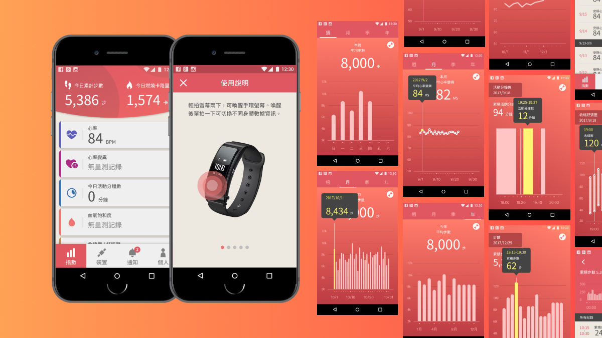
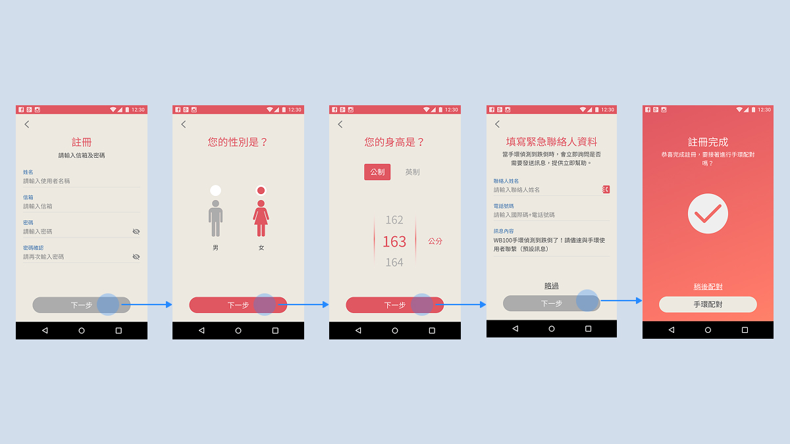
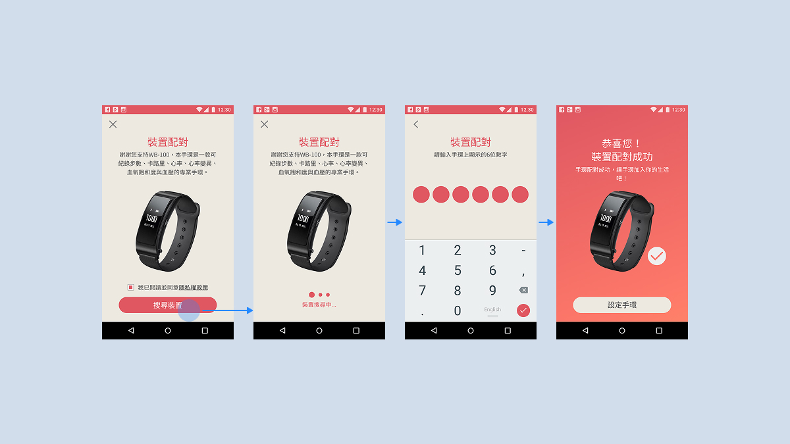
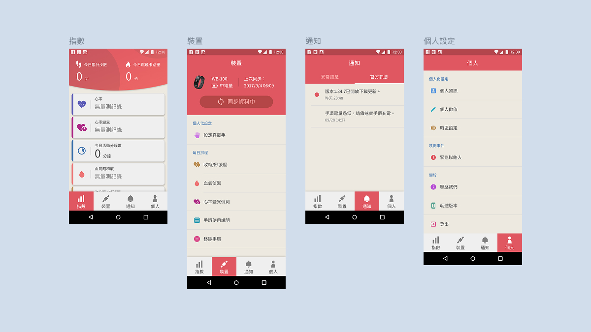
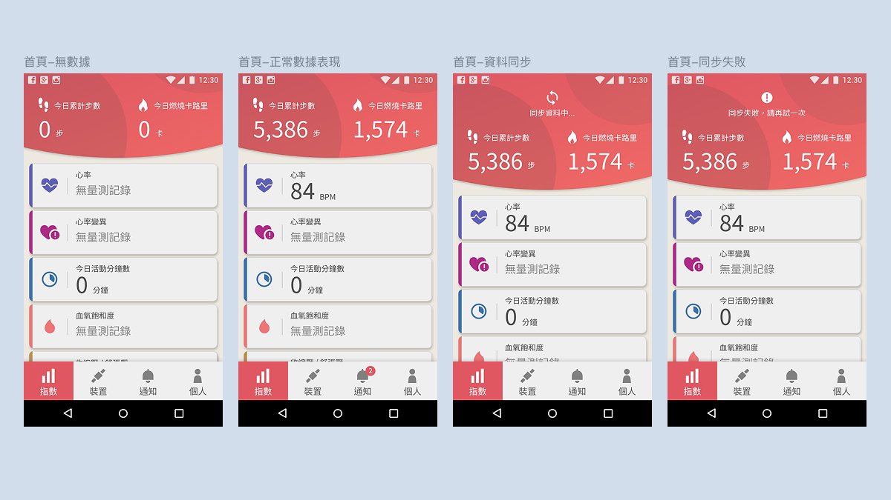
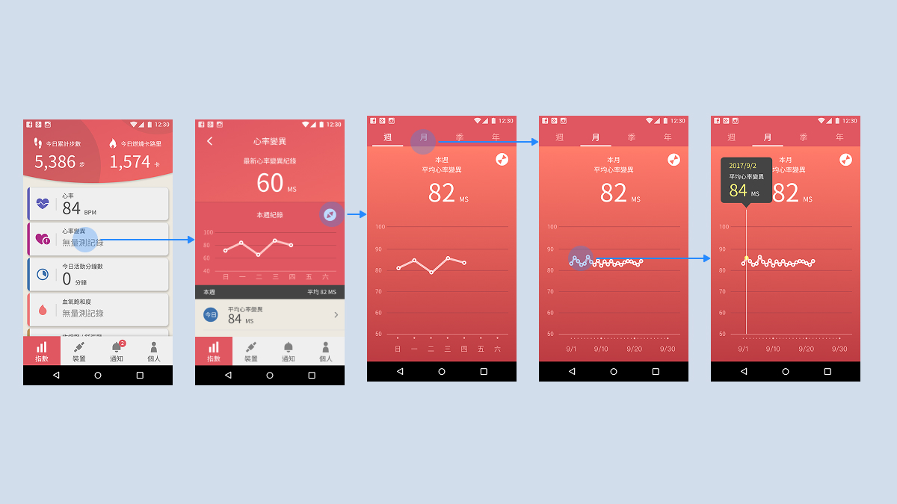
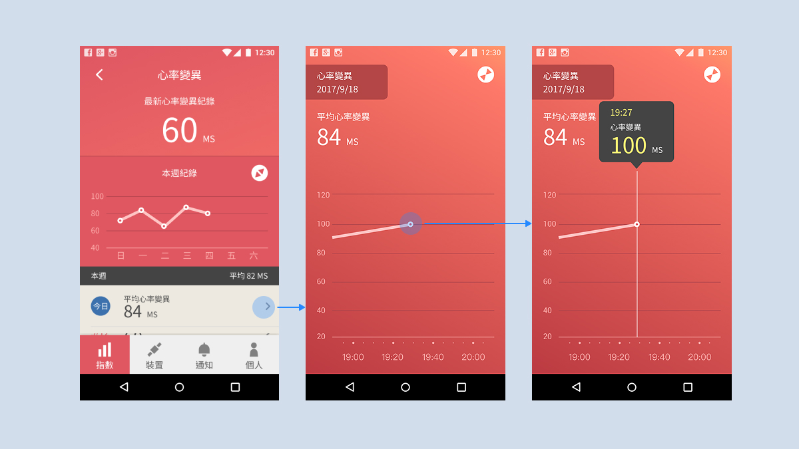
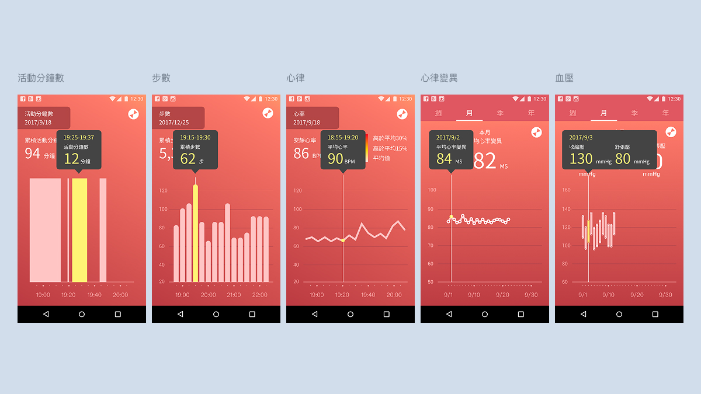
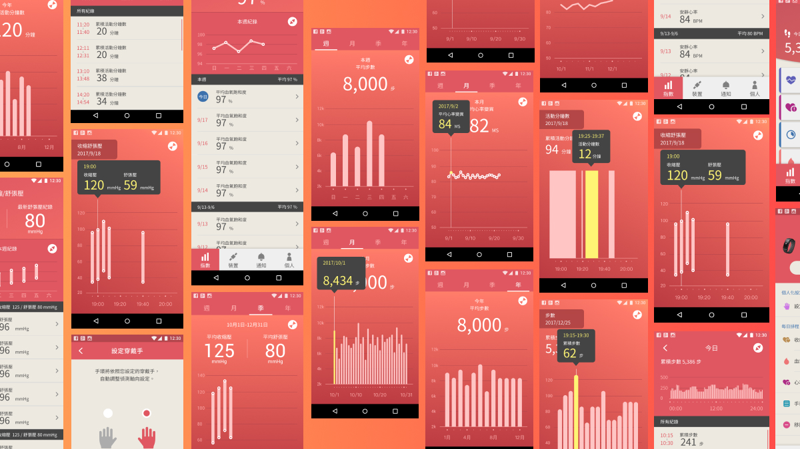

WORK・IOT
為歐豆心律手環規劃對應的手機端應用程式，從裝置配對、身體數據輸入，到步數、心率、血壓等生理指標的圖表化呈現，建立一套兼顧穿戴裝置操作邏輯與資訊視覺化易讀性的完整體驗。
合作對象
歐豆心律手環
專案時間
2017
專案類型
App
負責內容
資訊架構、UX規劃、UI設計

App 首頁指數列表與使用說明畫面，右側延伸步數、心率變異、血壓等各類生理數據的圖表呈現。
本專案重點
歐豆心律手環的配戴情境橫跨日常運動與居家健康監測，手機端 App 因此需要從帳號註冊、裝置配對等前導流程開始，建立「指數／裝置／通知／個人」四大分頁的導覽架構，並讓首頁能因應無數據、正常數據、同步中、同步失敗等不同狀態，給予對應的畫面回饋。在資料視覺化上，步數屬於可累加的離散事件，適合以長條圖呈現週期內的分佈；心率變異為連續且細微波動的指標，需搭配可切換週／月區間的趨勢線，並支援點選單一時間點查看數值的互動方式；血壓則需同時呈現收縮壓與舒張壓的區間關係，適合以區間長條圖表達高低落差。實體手環與 App 之間的配對、同步流程，同樣直接影響使用者能否順利進入日常監測情境，因此規劃時同步納入裝置端與 App 端的操作銜接，讓資訊圖表的設計選擇，回應每一種身體數據本身的特性。
帳號註冊與裝置配對流程
首次使用需完成帳號註冊，依序輸入信箱密碼、性別、身高等基礎資料，並填寫緊急聯絡人資訊，供手環偵測到跌倒時即時通知使用；註冊完成後即可直接銜接手環配對，確認隱私權政策、搜尋裝置、輸入手環螢幕顯示的六位數驗證碼，完成實體裝置與帳號的綁定。

帳號註冊流程：信箱密碼設定 → 性別 → 身高 → 緊急聯絡人資料 → 註冊完成，並可直接進入手環配對。

裝置配對流程：搜尋裝置 → 裝置搜尋中 → 輸入手環顯示的六位數字 → 裝置配對成功。
App 導覽架構與首頁多重狀態設計
App 以「指數、裝置、通知、個人」四大分頁構成底部導覽架構，讓功能歸屬清楚可預期；其中指數頁作為每日生理數據的首頁，考量手環資料同步並非隨時穩定，另需支援無數據、正常數據、資料同步中、同步失敗四種狀態，使使用者在任何連線狀況下都能判斷目前應該等待、重試，或已可查看最新數值。

底部導覽四大分頁：指數（生理數據首頁）、裝置（同步與偵測設定）、通知（異常／官方訊息）、個人（帳號與偏好設定）。

首頁四種狀態：無數據、正常數據表現、資料同步中、同步失敗，各自給予對應的畫面回饋。
心率變異瀏覽路徑與單點數值互動
從首頁點選心率變異項目後，先呈現本週最新紀錄與趨勢折線圖，使用者可再切換至週、月等不同時間區間，讓短期波動與長期變化能在同一套圖表邏輯下被比較；點選趨勢折線圖上的任一時間點，會即時彈出當下的心率變異數值，讓使用者不需切換頁面，就能在瀏覽整體趨勢的同時回頭確認特定時刻的詳細讀數。

心率變異瀏覽路徑：首頁點選 → 本週紀錄 → 週檢視 → 月檢視，時間區間可依需求切換。

點選趨勢折線圖上的任一時間點，即時彈出當下心率變異數值，方便回溯查詢單一時刻的讀數。
多指標細節列表與活動分鐘數
除了心率變異，步數、心律、血壓等指標也共用同一套「點選時間點彈出數值」的細節頁邏輯；活動分鐘數則另以長條圖呈現當日累積活動量，並標示單一時段的活動分鐘數，讓多項數據維持一致的閱讀方式。

左：活動分鐘數細節頁，長條圖標示單一時段的活動量；右：步數、心律、心律變異、血壓共用一致的細節頁版型。
重點畫面總覽
